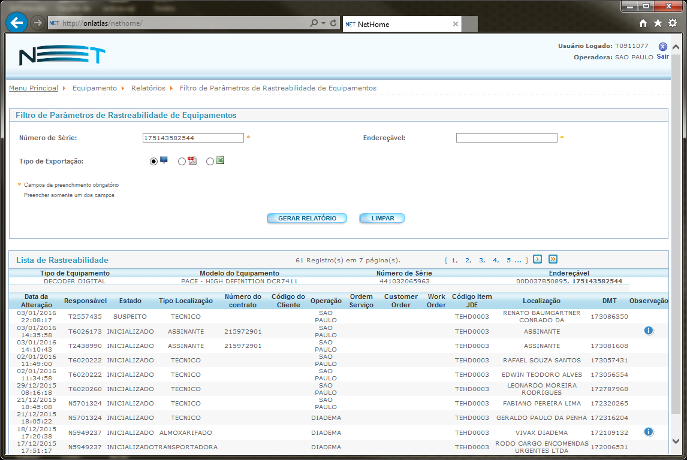

Troca de Terminal em Baixa de OS
IT:431717
NETSMS - Troca de Terminal em Baixa de OS
RESUMO:
Orientar os colaboradores NET sobre ERRO: “Terminal Entrega inválido (FKV). ”
TELA: “Rede Interna >> OS’s >> Baixa de OS’s ”
AÇÃO: “TROCA TERMINAL”
PROBLEMA:
Problema de troca de Terminal em Baixa de OS
RESOLUÇÃO:
Aplicação: NETSMS
Para o problema temos o seguinte cenário.
Ao realizar a movimentação de terminal na tela de Baixa de OS’s, onde é obrigatório a troca dos terminais, é apresentada a mensagem de erro ‘Terminal Entrega inválido (FKV). ’ após o preenchimento do campo das informações do terminal de entrega e/ou devolução.

Validar no NETSMS se a mensagem de erro apresentada informa ‘Terminal de Entrega inválido (FKV). ’ após preencher o número do série ou endereçável principal do equipamento.
Exemplo de tela de erro:

> Validar no NOVO ATLAS (web), na tela “Equipamento >> Relatórios >> Rastreabilidade”.
Utilizar o filtro de Número de Serie ou Endereçável e clicar em “Gerar Relatório”.
Tela de relatório de rastreabilidade do terminal:
Na informação do “Modelo do Equipamento” verificar se o terminal tem a mesma tecnologia do produto no ponto que está vinculada à OS.
Para verificar o ponto e produto da OS informada, acessar a aba Produtos do NETSMS. Verificar o produto do ponto.
Tela da aba Produtos do NETSMS.

Nas OSs de Troca de equipamento sem mudança de produtos os terminais deve ser da mesma tecnologia.
Somente pode ser feita a troca de terminais de Digital para Digital, HD para HD ou HD Max para HD Max.
AÇÃO DO ATENDIMENTO:
Orientar o usuário a realizar a troca de terminais somente de tecnologia iguais e de mesma tecnologia do produto instalado no ponto da OS.
| Categoria: | SISTEMAS.NETSMS.OS.TROCA DE TERMINAL EM BAIXA DE OS |
|---|---|
| Grupo: | SERVICE DESK N1 |
REFERÊNCIA:
N/A
Propriedades do Documento:
ID do doc: 431717
Data de criação: 05/09/2018
Data de Revisão: 05/09/2018